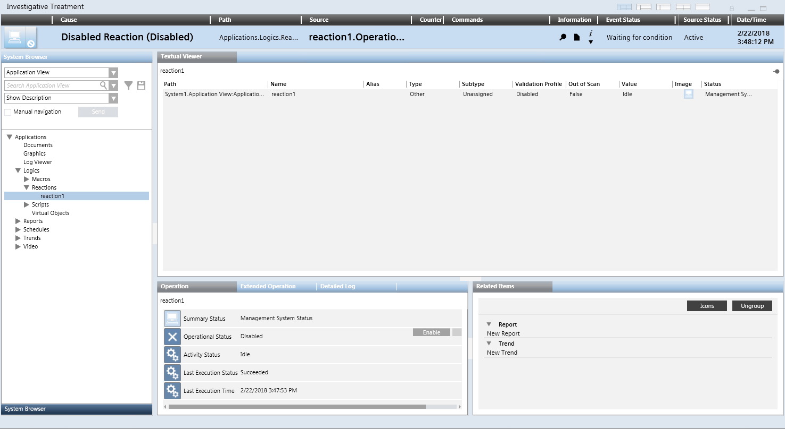

Handling an Event with Investigative Treatment
The investigative treatment window lets you send event-handling commands while using System Manager to inspect the event source.

Start Investigative Treatment
- An event button without the icon is available in Event List, or in the Event Detail bar.
NOTE: If the icon is present you must instead handle the event with assisted treatment. See Handling Events with Assisted Treatment.
- Do one of the following:
- If the event is not yet selected, depending on the Client Profile, single-click or double-click the event button.
- If the event is already selected, in the Information column, click Opens related treatment .
- The Investigative Treatment window opens. This is a window like System Manager, with the event descriptor along the top, and the object that caused the event already selected in System Browser. In Event List, the event button for that event is replaced by a blank placeholder to indicate it is under investigative treatment.
Send Event Handling Commands
From the event descriptor, use the icons in the Commands column to send any commands as they become available. The commands you must send will vary depending on configuration. A typical sequence may include:
- Click
 to acknowledge the event.
to acknowledge the event. - This action also causes any audible alarm sound of the field panel to be silenced.
- After acknowledging the event, click to silence or click to unsilence the detection line.
This means that if a field panel is connected to a detection line with horns, you can silence any horns audible sound in the site or turn it back. - Click
 to reset the event.
to reset the event. - Click to close the event.
Check the Event Status
When no further commands are available, use the Event Status column to determine the next action you need to take. A typical sequence may include:
- Event Status =
Waiting for condition: The event cannot be reset until the event source is back to normal. - You must correct the situation that caused the event or wait for the Source Status to return to
Quiet, before you can send the remaining commands. - Event Status =
Closed. You finished handling this event, and the event is ready to be cleared from the list. - Click the event button again to deselect the event.
- The Investigative Treatment window closes, and the event is removed from Event List.
Switch Between Investigative Treatment and Event List
You can switch back to check Event List, and handle other events from there, without interrupting the investigative treatment currently in progress.
- The Investigative Treatment window displays in the foreground.
- In the Summary bar, do one of the following:
- Click Open Event List .
- Select Menu > Active Tasks > Event List.
- Event List displays. The event that you are currently handling in investigative treatment is indicated by a blank placeholder in place of the event button. The Investigative Treatment window is moved to the background but not closed.
- (Optional) If required, you can select other events in Event List, and send event-handling commands from there. You cannot select the event that is currently in investigative treatment.
- To return to investigative treatment, in the Summary bar, do one of the following:
- Click Close Event List .
- Select Menu > Active Tasks > Investigative Treatment.
- The Investigative Treatment window returns to the foreground and you can resume the handling of the event from there.
Interrupt Investigative Treatment of an Event
You can interrupt the investigative treatment of an event at any time, and then either finish the handling of the event from Event List or resume investigative treatment later.
- To interrupt investigative treatment of an event, do one of the following:
- In the Investigative Treatment window, click the event button in the event descriptor along the top.
- In Event List or the Event Detail bar, click the blank placeholder that displays in the position of the event button.
- The Investigative Treatment window closes. In Event List, the event is deselected, and the event button displays again instead of the blank placeholder. The Event Status remains as it was when you interrupted handling the event.

You can only have one event in assisted or investigative treatment at any given time. If you want to start assisted or investigative treatment of another event, this will interrupt any assisted/investigative treatment currently in progress. However, you can later resume the interrupted treatment from where you left off.
Finish Investigative Treatment of an Event
When you have sent all the required commands and finished handling the event, the Event Status changes to Closed and the Suggested Action is Suspend the event.
- Do one of the following:
- In the Investigative Treatment window, click the event button in the event descriptor along the top.
- In Event List or the Event Detail bar, click the blank placeholder that displays in the position of the event button.
- The Investigative Treatment window closes, and the event is cleared from Event List.